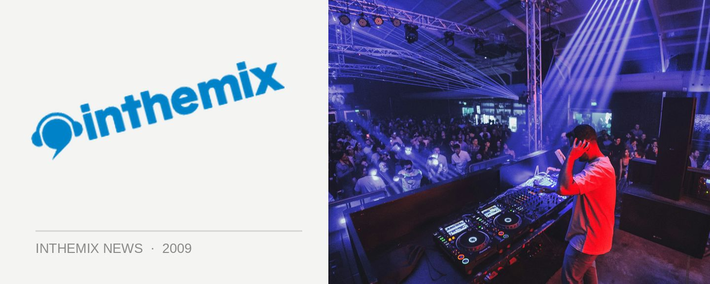

DNBBQ's winter junglist special with Kenny Ken
Local providers of quality music and tasty treats Foreigndub will be bringing their widely loved DNBBQ events back in early August for a frosty ‘Winter Junglist Special’, and they’ve secured yet another quality name in underground drum n’ bass to help host the proceedings. The UK’s Kenny Ken is known for his work with the Mix and Blen Recordings imprints, and he’ll be helping set the tempo along with a quality local lineup.
Things will once again take place at the Manning Bar at Sydney University, and in true DNBBQ tradition, there will be a free tasty gourmet BBQ on the balcony for the early birds who get there between 7pm and 9pm.
Foreigndub will also be utilising the venue to its full extent with music across two areas. The balcony will feature jazz, funk, reggae, dub and hip hop, and the main room will be jungle and drum n’ bass.
DNBBQ hits the Manning Bar on Saturday August 8th, presented by inthemix. Tickets on sale now, check out the lineup below…
Kenny Ken
ALF & Ozi Battla
Dave Edwards
Foreigndub
El Gusto
Basslines
Firehouse
Dj Ability
JP
Highly Dubious
Dojo Cuts Soundsystem
Polaris